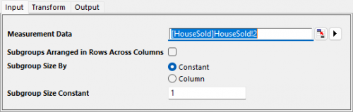
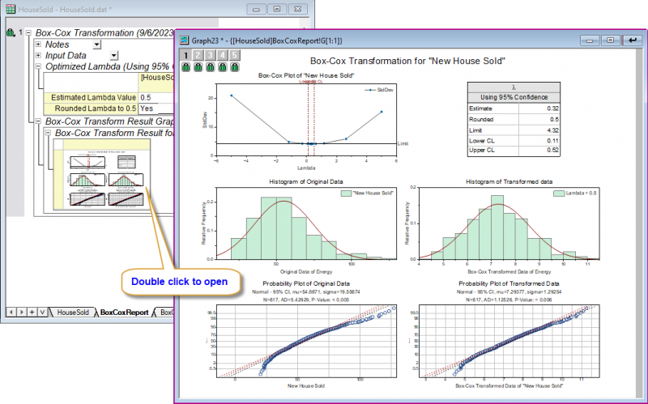

データ変換のチュートリアル
Tutorial-DT
始める前の注意
- ここからサンプルプロジェクトファイルをダウンロードし、Originで開きます。
 | 詳細情報:
|
ユーザストーリー
ある地域で販売された住宅のデータがあります。分布の識別ツールを実行したところ正規分布に従っていないことがわかりました。
そこで、データを変換することで、分析に使用するデータを正規分布に従うようにしたいと考えています。
Originでの操作
- Originでサンプルプロジェクトファイルを開き、フォルダ3.Nonnormalをプロジェクトエクスプローラで開きます。ブックHouse Soldをアクティブにします。
- ワークシートのB列を選択します。Originのウィンドウ左側にあるアプリギャラリーウィンドウを開き、アイコン
 をクリックします。
をクリックします。
- データ変換タブを開き、データがすべて0より大きいことを確認します。ツリーから Box-Cox変換法を使用するべきであることがわかります。Box-Cox変換アイコンをクリックして、ダイアログを開きます。
- 開いたダイアログの入力タブで、列Bが測定データとして自動的に選択されます。サブグループのサイズを定数にし、サブグループのサイズの定数を1に設定します。
-

- 他はデフォルトのまま、OKボタンをクリックします。
結果の解釈
- 埋め込みグラフをダブルクリックすると個別のグラフウィンドウとして開けます。
-
 の信頼区間は [0.11, 0.52] で、1が含まれません。これは、変換が適切であるとがわかります。
の信頼区間は [0.11, 0.52] で、1が含まれません。これは、変換が適切であるとがわかります。
- また、変換後のデータのヒストグラムと確率プロットから、変換されたデータがほぼ正規分布であることがわかります。
